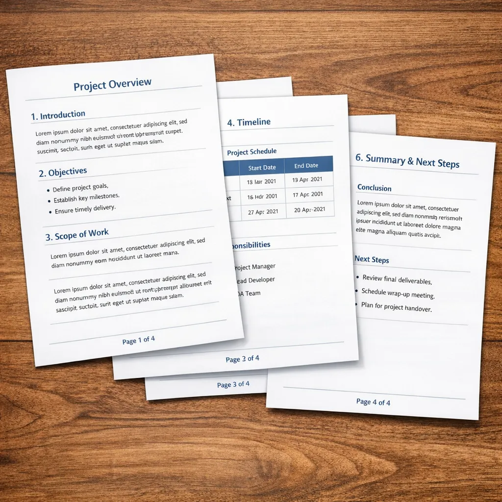

How to Add Page Numbers to PDF Online — Complete Guide
Organize your documents instantly. Learn how to securely add structured, professional page numbers to your long PDFs effortlessly.

Topic: Page Numbers-Structured, Professional, PDF
Introduction: Why Page Numbers in PDF?? PDF is the most popular file format in use for academia, business and official documents because it retains the same formatting whenever accessed.
But there's one thing it needs when your document starts getting longer: Page numbers for organization and navigation.
In the following cases: 50 page report, Students submitting assignments, Business preparing reports, Legal documents with specified formatting.
Without page numbers, the document feels unfinished and chaotic. Now is when adding page numbers is a real saving throw.
In this scenario: Without opening the file in complicated software to manually edit it, the user can add page numbers to the document by using both JKM Edit Home and add page numbers tool. The process is convenient, simple and web-operated.
What Is A Page Number Tool In PDF?
It is a tool that will add real numbers to each page of your PDF sequentially.
Example: Thanks to modern players, you can set the position of the page number, change the style of formatting, set the number to start at, number all the pages, without affecting the layout of your document.
Which means that your documents will always have a cohesive format and is easier to navigate.
Typical problem when not when you are working without page numbers
1) Hard navigation in documents of many pages
Without page numbers in your document you have to struggle to find specific sections and refer to specific parts and following the flow of the document.
2) Unprofessional appearance
When you send documents without page numbers to clients, professors or reviewers, they can look at it as an incomplete and rushed work.
3) Disorganization when sharing documents in a group
When you and others all review a document, it is difficult to refer to content and when discussed (e.g. "on page 14 there's a chart we want to refer to".
4) Reorganizing difficulties
Printing a document without page numbers is an extreme difficulty if you drop, reorder, or shuffle the pages.
Why adding page numbers is good
1) Better structure
With a good structure and page numbers, reading and following a long document is a breeze.
2) To look professional when send papers to companies/schools
Papers has (should have) to be good formated. If you don't see page number on schools and companies, sometimes they reject your proposals (you'll get a low grade).
3) Easy browsing and jumping to specific pages the users want
Importas. Users can easily jump back and forward to the specific pages the users want. Browse Page 1 Page 2 Page 3… Page 100.
5) easy for users for discussing and collaborating Share Prompts
3 Reasons JKM Edit is The Best Page Number Tool for Your PDF Documents
If you use traditional page numbering techniques, you'll need... PDF editing software, Time-consuming formatting, Technical know-how, Too-cumbersome installation.
Jkm edit online tools gives you... Instant access, Browser-based processing, No-new software to install, Easy formatting, Fast results.
Making document formatting is so easy now.
JKM Edit: Fix PDF Page Number Issues
1. Easy-to-use interface
JKM Edit makes you very easy to: Upload your PDFs, Select your new page number style, Apply page numbers, Download your PDFs.
2. Online, browser-based tool
Works on laptops, phones, tablets, iPhone or Android. No heavy downloading or installing.
3. Custom page number placement
Place numbers automatically at top, center, bottom, or corners. Place numbers dynamically based on existing content in each PDF page.
4. Custom formatting
Elaborate and easy-to-adv-cusp font size, formatting and more.
5. Process pages in an instant.
CADs & PDFs might have hundreds of pages! Adobe might need hours, jkm edit numbers pages in seconds!
6. Without mess, without haste and for free!
JKM edit emphasizes the without-me, the without-haste. No hassle, no compromise.
Haddna not to stop messing number it up?
Let's contribute the till the without-mess, the without-page numbers. Number pages in seconds with JKM Edit.
Turn Your PDF Page Numbers on Google Typography
Add Your PDF Page Numbers for Free.
Add Page Numbers to PDF